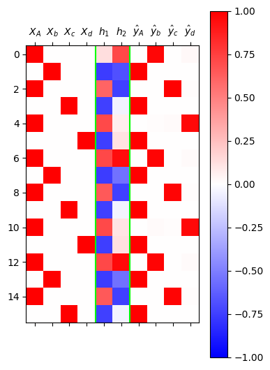

import torch
import pandas as pd
import matplotlib.pyplot as plt12wk-2: (순환신경망) – RNNCell, RNN, LSTM, Appedix A

1. 강의영상
2. Imports
3. Data – AbAcAd
- 데이터정리
txt = list('AbAcAd'*50)
txt[:10]['A', 'b', 'A', 'c', 'A', 'd', 'A', 'b', 'A', 'c']df_train = pd.DataFrame({'x':txt[:-1], 'y':txt[1:]})
df_train[:5]| x | y | |
|---|---|---|
| 0 | A | b |
| 1 | b | A |
| 2 | A | c |
| 3 | c | A |
| 4 | A | d |
x = torch.tensor(df_train.x.map({'A':0,'b':1,'c':2,'d':3}))
y = torch.tensor(df_train.y.map({'A':0,'b':1,'c':2,'d':3}))
X = torch.nn.functional.one_hot(x).float()
y = torch.nn.functional.one_hot(y).float()X.shape, y.shape(torch.Size([299, 4]), torch.Size([299, 4]))4. rNNCell – 복습
# 간장을 만드는 방법
# 콩물1, 간장0 ---숙성---> 간장1
# 콩물2, 간장1 ---숙성---> 간장2
#
# RNNCell
# Xt, h_{t-1}
# ---concat---> [Xt h_{t-1}]
# ---선변------> linr ( [Xt h_{t-1}] )
# ---tanh----> tanh (linr ( [Xt h_{t-1}] ) ) = ht
# Xt, h_{t-1}
# ---선변---> linr1(Xt) + linr2(ht)
# ---tanh----> tanh ( linr1(Xt) + linr2(ht) ) = ht
#
# ht ---> ot = logits = cook(ht) ---> yt_hat = soft_max(ot) class rNNCell(torch.nn.Module):
def __init__(self):
super().__init__()
self.i2h = torch.nn.Linear(4,2)
self.h2h = torch.nn.Linear(2,2)
self.tanh = torch.nn.Tanh()
def forward(self,Xt,ht): # 엄밀하게는 h_{t-1}
ht = self.tanh(self.i2h(Xt) + self.h2h(ht))
return ht
torch.manual_seed(43052)
rnncell = rNNCell()
cook = torch.nn.Linear(2,4)
loss_fn = torch.nn.CrossEntropyLoss()
optimizr = torch.optim.Adam(
list(rnncell.parameters()) +
list(cook.parameters()),
lr=0.1
)
#---#
L = len(X)
for epoc in range(200):
# 1~2
loss = 0
ht = torch.zeros(2) # 첫 ht는 맹물
for t in range(L):
Xt, yt = X[t], y[t]
ht = rnncell(Xt,ht)
ot = cook(ht)
loss = loss_fn(ot,yt) + loss
loss = loss / L
# 3
loss.backward()
# 4
optimizr.step()
optimizr.zero_grad()h = torch.zeros(L,2)
water = torch.zeros(2)
h[0] = rnncell(X[0], water)
for t in range(1,L):
h[t] = rnncell(X[t], h[t-1])
out = cook(h)
yhat = torch.nn.functional.softmax(out,dim=1)
yhattensor([[4.1978e-03, 9.4555e-01, 1.9557e-06, 5.0253e-02],
[9.9994e-01, 5.5569e-05, 8.4751e-10, 1.3143e-06],
[2.1349e-07, 1.1345e-06, 9.7019e-01, 2.9806e-02],
...,
[2.1339e-07, 1.1339e-06, 9.7020e-01, 2.9798e-02],
[9.9901e-01, 9.6573e-04, 6.9303e-09, 2.1945e-05],
[7.2919e-04, 2.5484e-02, 3.3011e-02, 9.4078e-01]],
grad_fn=<SoftmaxBackward0>)mat = torch.concat( [X, h, yhat] , axis=1).data
plt.matshow(mat[:16],cmap="bwr",vmin=-1,vmax=1)
plt.colorbar()
plt.xticks(
range(10),
[r"$X_A$",r"$X_b$",r"$X_c$",r"$X_d$",
r"$h_1$",r"$h_2$",
r"$\hat{y}_A$",r"$\hat{y}_b$",r"$\hat{y}_c$",r"$\hat{y}_d$"]
);
plt.axvline(x=3.5,color='lime')
plt.axvline(x=5.5,color='lime')
ref: https://pytorch.org/docs/stable/generated/torch.nn.RNNCell.html
- torch.nn.RNNCell을 이용하여 학습
torch.manual_seed(0)
rnncell = torch.nn.RNNCell(
input_size = 4, #X.shape = (L,4)
hidden_size= 2, # h.shape = (L,2)
)
cook = torch.nn.Linear(2,4)
loss_fn = torch.nn.CrossEntropyLoss()
optimizr = torch.optim.Adam(
list(rnncell.parameters()) +
list(cook.parameters()),
lr=0.1
)
#---#
L = len(X)
for epoc in range(200):
# 1~2
loss = 0
ht = torch.zeros(2) # 첫 ht는 맹물
for t in range(L):
Xt, yt = X[t], y[t]
ht = rnncell(Xt,ht)
ot = cook(ht)
loss = loss_fn(ot,yt) + loss
loss = loss / L
# 3
loss.backward()
# 4
optimizr.step()
optimizr.zero_grad()h = torch.zeros(L,2)
water = torch.zeros(2)
h[0] = rnncell(X[0], water)
for t in range(1,L):
h[t] = rnncell(X[t], h[t-1])
out = cook(h)
yhat = torch.nn.functional.softmax(out,dim=1)
yhattensor([[4.6404e-04, 8.6681e-01, 1.3271e-01, 2.1127e-05],
[9.9893e-01, 7.6733e-07, 4.0587e-04, 6.6831e-04],
[1.8856e-04, 8.8543e-05, 1.9117e-01, 8.0855e-01],
...,
[1.5757e-03, 3.7491e-02, 9.2757e-01, 3.3366e-02],
[9.9012e-01, 1.0751e-07, 5.2768e-04, 9.3539e-03],
[4.0457e-05, 5.4018e-06, 4.8826e-02, 9.5113e-01]],
grad_fn=<SoftmaxBackward0>)mat = torch.concat( [X, h, yhat] , axis=1).data
plt.matshow(mat[:16],cmap="bwr",vmin=-1,vmax=1)
plt.colorbar()
plt.xticks(
range(10),
[r"$X_A$",r"$X_b$",r"$X_c$",r"$X_d$",
r"$h_1$",r"$h_2$",
r"$\hat{y}_A$",r"$\hat{y}_b$",r"$\hat{y}_c$",r"$\hat{y}_d$"]
);
plt.axvline(x=3.5,color='lime')
plt.axvline(x=5.5,color='lime')
- torch.nn.RNNCell의 가중치를 이전에 직접 설계한 rNNCell와 동일하게 설정한 이후 학습
- 왜 이런것을 하지? 우리가 직접만들어본 클래스
rNNCell이 torch에서 기본제공하는torch.nn.RNNCell와 동일기능을 수행한다는 것을 확인하기 위함
torch.manual_seed(43052)
_rnncell = rNNCell()
cook = torch.nn.Linear(2,4)
rnncell = torch.nn.RNNCell(4,2)
rnncell.weight_ih.data = _rnncell.i2h.weight.data
rnncell.weight_hh.data = _rnncell.h2h.weight.data
rnncell.bias_ih.data = _rnncell.i2h.bias.data
rnncell.bias_hh.data = _rnncell.h2h.bias.data
loss_fn = torch.nn.CrossEntropyLoss()
optimizr = torch.optim.Adam(
list(rnncell.parameters()) +
list(cook.parameters()),
lr=0.1
)
#---#
L = len(X)
for epoc in range(200):
# 1~2
loss = 0
ht = torch.zeros(2) # 첫 ht는 맹물
for t in range(L):
Xt, yt = X[t], y[t]
ht = rnncell(Xt,ht)
ot = cook(ht)
loss = loss_fn(ot,yt) + loss
loss = loss / L
# 3
loss.backward()
# 4
optimizr.step()
optimizr.zero_grad()h = torch.zeros(L,2)
water = torch.zeros(2)
h[0] = rnncell(X[0], water)
for t in range(1,L):
h[t] = rnncell(X[t], h[t-1])
out = cook(h)
yhat = torch.nn.functional.softmax(out,dim=1)
yhattensor([[4.1978e-03, 9.4555e-01, 1.9557e-06, 5.0253e-02],
[9.9994e-01, 5.5569e-05, 8.4751e-10, 1.3143e-06],
[2.1349e-07, 1.1345e-06, 9.7019e-01, 2.9806e-02],
...,
[2.1339e-07, 1.1339e-06, 9.7020e-01, 2.9798e-02],
[9.9901e-01, 9.6573e-04, 6.9303e-09, 2.1945e-05],
[7.2919e-04, 2.5484e-02, 3.3011e-02, 9.4078e-01]],
grad_fn=<SoftmaxBackward0>)6. torch.nn.RNN
ref: https://docs.pytorch.org/docs/stable/generated/torch.nn.RNN.html
- torch.nn.RNNCell 에서의 차원정리
torch.nn.RNNCell, 배치사용 X |
torch.nn.RNNCell, 배치사용 O |
|
|---|---|---|
| \({\bf X}\) | \((L,H_{in})\) | \((L, N, H_{in})\) |
| \({\boldsymbol h}\) | \((L,H_{out})\) | \((L, N, H_{out})\) |
| \({\bf y}\) | \((L,Q)\) | \((L, N, Q)\) |
| \(X_t\) | \((H_{in},)\) | \((N, H_{in})\) |
| \(h_t\)1 | \((H_{out},)\) | \((N, H_{out})\) |
| \(y_t\) | \((Q,)\) | \((N,Q)\) |
1 =water
- torch.nn.RNN 에서의 차원정리
torch.nn.RNN, 배치사용 X |
torch.nn.RNN, 배치사용 O |
|
|---|---|---|
| \({\bf X}\) | \((L,H_{in})\) | \((L, N, H_{in})\) |
| \({\boldsymbol h}\) | \((L,H_{out})\) | \((L, N, H_{out})\) |
| \({\bf y}\) | \((L,Q)\) | \((L, N, Q)\) |
| \({\boldsymbol h}_x\)2 | \((D\times {\tt num\_layers},H_{out})\) | \((D\times {\tt num\_layers},N,H_{out})\) |
2 =waters
- torch.nn.RNN을 활용한 학습
torch.manual_seed(0)
rnn = torch.nn.RNN(
input_size = 4, # X.shape = (L,4)
hidden_size = 2, # h.shape = (L,2)
num_layers = 1, # num_layers = 1 이라는 의미
bidirectional = False # D=1 이라는 의미
)
cook = torch.nn.Linear(2,4)
loss_fn = torch.nn.CrossEntropyLoss()
optimizr = torch.optim.Adam(
list(rnn.parameters())+
list(cook.parameters()),
lr=0.1
)
#---#
for epoc in range(200):
# 1
waters = torch.zeros(1,2) # 1은 D*num_layers 를 의미
h, hL = rnn(X,waters) # rnn의 결과는 길이가 2인 튜플이고, 첫원소가 h
netout = cook(h)
# 2
loss = loss_fn(netout, y)
# 3
loss.backward()
# 4
optimizr.step()
optimizr.zero_grad()yhat = torch.nn.functional.softmax(netout,dim=1)mat = torch.concat( [X, h, yhat] , axis=1).data
plt.matshow(mat[:16],cmap="bwr",vmin=-1,vmax=1)
plt.colorbar()
plt.xticks(
range(10),
[r"$X_A$",r"$X_b$",r"$X_c$",r"$X_d$",
r"$h_1$",r"$h_2$",
r"$\hat{y}_A$",r"$\hat{y}_b$",r"$\hat{y}_c$",r"$\hat{y}_d$"]
);
plt.axvline(x=3.5,color='lime')
plt.axvline(x=5.5,color='lime')
- torch.nn.RNN의 가중치를 이전에 직접 설계한 rNNCell와 동일하게 설정한 이후 학습
torch.manual_seed(43052)
_rnncell = rNNCell()
cook = cook = torch.nn.Linear(2,4)
rnn = torch.nn.RNN(
input_size = 4, # X.shape = (L,4)
hidden_size = 2, # h.shape = (L,2)
num_layers = 1, # num_layers = 1 이라는 의미
bidirectional = False # D=1 이라는 의미
)
rnn.weight_hh_l0.data = _rnncell.h2h.weight.data
rnn.weight_ih_l0.data = _rnncell.i2h.weight.data
rnn.bias_hh_l0.data = _rnncell.h2h.bias.data
rnn.bias_ih_l0.data = _rnncell.i2h.bias.data
loss_fn = torch.nn.CrossEntropyLoss()
optimizr = torch.optim.Adam(
list(rnn.parameters())+
list(cook.parameters()),
lr=0.1
)
#---#
for epoc in range(200):
# 1
waters = torch.zeros(1,2) # 1은 D*num_layers 를 의미
h, hL = rnn(X,waters) # rnn의 결과는 길이가 2인 튜플이고, 첫원소가 h
netout = cook(h)
# 2
loss = loss_fn(netout, y)
# 3
loss.backward()
# 4
optimizr.step()
optimizr.zero_grad()h,_ = rnn(X,waters)
netout = cook(h)
yhat = torch.nn.functional.softmax(netout,dim=1)
yhattensor([[4.1805e-03, 9.4591e-01, 1.9270e-06, 4.9911e-02],
[9.9994e-01, 5.5487e-05, 8.4018e-10, 1.3082e-06],
[2.1175e-07, 1.1337e-06, 9.7028e-01, 2.9717e-02],
...,
[2.1166e-07, 1.1331e-06, 9.7029e-01, 2.9709e-02],
[9.9900e-01, 9.7465e-04, 6.9224e-09, 2.2068e-05],
[7.5071e-04, 2.6708e-02, 3.1534e-02, 9.4101e-01]],
grad_fn=<SoftmaxBackward0>)#위의 결과는 아래와 다르지만 그냥 같다고 생각합시다.
# tensor([[4.1978e-03, 9.4555e-01, 1.9557e-06, 5.0253e-02],
# [9.9994e-01, 5.5569e-05, 8.4751e-10, 1.3143e-06],
# [2.1349e-07, 1.1345e-06, 9.7019e-01, 2.9806e-02],
# ...,
# [2.1339e-07, 1.1339e-06, 9.7020e-01, 2.9798e-02],
# [9.9901e-01, 9.6573e-04, 6.9303e-09, 2.1945e-05],
# [7.2919e-04, 2.5484e-02, 3.3011e-02, 9.4078e-01]],
# grad_fn=<SoftmaxBackward0>)
Note
재현값이 차이나는 이유
재현값의 차이는 단순한 수치 오차(numerical error)로 보입니다. 문제 상황에서 에포크를 약 50회 수행했을 때는 재현값 사이에 차이가 없었지만, 100회 이상 수행하면서 약간의 차이가 발생하기 시작했습니다. 이는 컴퓨터가 소수점 아래 여러 자릿수를 생략하고 근사값으로 계산하기 때문에, 동일한 연산이라도 반복적으로 적용되면 누적된 오차로 인해 결과가 달라질 수 있기 때문으로 보입니다.
예를 들어, 아래의 코드에서 이러한 차이를 확인할 수 있습니다:
torch.tensor([1/3]*100000).sum(), torch.tensor([1/3])*100000출력 결과는 다음과 같습니다:
(tensor(33333.3398), tensor([33333.3359]))이론적으로는 두 연산이 동일한 값을 반환해야 하지만, 내부적인 계산 방식의 차이로 인해 소수점 셋째 자리에서 미세한 오차가 발생합니다. (물론 전체적인 값에는 큰 차이가 없습니다.) 수업 시간에 발생한 상황도 이와 유사한 수치 오차로 인한 현상으로 보입니다.
7. torch.nn.LSTM
- torch.nn.LSTM을 이용하여 학습
torch.manual_seed(5)
lstm = torch.nn.LSTM(
input_size = 4, # X.shape = (L,4)
hidden_size = 2, # h.shape = (L,2)
num_layers = 1, # num_layers = 1 이라는 의미
bidirectional = False # D=1 이라는 의미
)
cook = torch.nn.Linear(2,4)
loss_fn = torch.nn.CrossEntropyLoss()
optimizr = torch.optim.Adam(
list(lstm.parameters())+
list(cook.parameters()),
lr=0.1
)
#---#
for epoc in range(200):
# 1
h, _ = lstm(X) # rnn의 결과는 길이가 2인 튜플이고, 첫원소가 h
netout = cook(h)
# 2
loss = loss_fn(netout, y)
# 3
loss.backward()
# 4
optimizr.step()
optimizr.zero_grad()yhat = torch.nn.functional.softmax(netout,dim=1)mat = torch.concat( [X, h, yhat] , axis=1).data
plt.matshow(mat[:16],cmap="bwr",vmin=-1,vmax=1)
plt.colorbar()
plt.xticks(
range(10),
[r"$X_A$",r"$X_b$",r"$X_c$",r"$X_d$",
r"$h_1$",r"$h_2$",
r"$\hat{y}_A$",r"$\hat{y}_b$",r"$\hat{y}_c$",r"$\hat{y}_d$"]
);
plt.axvline(x=3.5,color='lime')
plt.axvline(x=5.5,color='lime')
Appendix A – 용어 정리 (\(\star\))
A. \({\bf X}\), \({\bf y}\)
- X, y를 지칭하는 이름
| 기호 | 용어 | 설명 |
|---|---|---|
| \({\bf X}\) | 설명변수 (Explanatory Variable) |
종속변수(반응변수)를 설명하거나 예측하는 데 사용되는 변수로, 전통 통계 및 머신러닝에서의 입력 역할 |
| 독립변수 (Independent Variable) |
전통적인 통계학 및 회귀 분석 문맥에서 사용됨 | |
| 입력변수 (Input Variable) |
머신러닝 모델에서 입력 데이터로 사용되며, 특히 신경망 구조 등에서 많이 쓰임 | |
| 특징 / 특성 (Feature) |
머신러닝, 데이터마이닝, 딥러닝 등에서 데이터를 구성하는 속성 또는 설명 변수로 사용됨 | |
| 예측 변수 (Predictor) |
예측 모델 설계 시 독립변수를 지칭하는 용어로, 모델링/통계 분석 문맥에서 흔히 사용됨 | |
| 공변량 (Covariate) |
실험 디자인, 특히 임상연구나 사회과학 연구에서 제어 변수로 사용됨 | |
| \({\bf y}\) | 반응변수 (Response Variable) |
독립변수의 영향을 받는 결과 변수로, 모델링이나 인과 추론에서 핵심적인 대상 |
| 종속변수 (Dependent Variable) |
전통 통계학과 회귀분석에서 사용되며, 독립변수의 영향을 받는 변수로 정의됨 | |
| 출력변수 (Output Variable) |
머신러닝 및 딥러닝에서 모델의 예측 결과로 출력되는 값으로 사용됨 | |
| 타겟 / 정답 (Target / Label) |
지도학습에서 모델이 학습해야 하는 실제 정답값을 의미하며, 분류/회귀 문제에 공통적으로 사용됨 |
B. 지도학습
- 우리가 수업에서 다루는 데이터는 주로 아래와 같은 느낌이다.
데이터는 \((X,y)\) 의 형태로 정리되어 있다.
\(y\)는 우리가 관심이 있는 변수이다. 즉 우리는 \(y\)를 적절하게 추정하는 것에 관심이 있다.
\(X\)는 \(y\)를 추정하기 위해 필요한 정보이다.
| \(X\) | \(y\) | 비고 | 순서 | 예시 |
|---|---|---|---|---|
| 기온(온도) | 아이스 아메리카노 판매량 | 회귀 | 상관없음 | 날씨가 판매량에 미치는 영향 분석 |
| 스펙 | 합격 여부 | 로지스틱 | 상관없음 | 입사 지원자의 합격 예측 |
| 이미지 | 카테고리 | 합성곱신경망 (CNN) | 상관없음 | 개/고양이 이미지 구분 |
| 유저, 아이템 정보 | 평점 | 추천시스템 | 상관없음 | 넷플릭스 영화 추천 |
| 처음 \(m\)개의 단어(문장) | 이후 1개의 단어(문장) | 순환신경망 (RNN) | 순서 상관 있음 | 챗봇, 문장 생성, 언어 모델링 |
| 처음 \(m\)개의 단어(문장) | 카테고리 | 순환신경망 (RNN) | 순서 상관 있음 | 영화리뷰 감정 분류 |
- 이러한 문제상황, 즉 \((X,y)\)가 주어졌을때 \(X \to y\)를 추정하는 문제를 supervised learning 이라한다.
C. 모델이란?
- 통계학에서 모델은 y와 x의 관계를 의미하며 오차항의 설계를 포함하는 개념이다. 이는 통계학이 “데이터 = 정보 + 오차”의 관점을 유지하기 때문이다. 따라서 통계학에서 모델링이란
\[y_i = net(x_i) + \epsilon_i\]
에서 (1) 적절한 함수 \(net\)를 선택하는 일 (2) 적절한 오차항 \(\epsilon_i\) 을 설계하는일 모두를 포함한다.
- 딥러닝 혹은 머신러닝에서 모델은 단순히
\[y_i \approx net(x_i)\]
를 의미하는 경우가 많다. 즉 “model=net”라고 생각해도 무방하다. 이 경우 “모델링”이란 단순히 적절한 \(net\)을 설계하는 것만을 의미할 경우가 많다.
- 그래서 생긴일
- 통계학교재 특징: 분류문제와 회귀문제를 엄밀하게 구분하지 않는다. 사실 오차항만 다를뿐이지 크게보면 같은 회귀모형이라는 관점이다. 그래서 일반화선형모형(GLM)이라는 용어를 쓴다.
- 머신러닝/딥러닝교재 특징: 회귀문제와 분류문제를 구분해서 설명한다. (표도 만듦) 이는 오차항에 대한 기술을 모호하게 하여 생기는 현상이다.
D. 학습이란?
- 학습이란 주어진 자료 \((X,y)\)를 잘 분석하여 \(X\)에서 \(y\)로 가는 어떠한 “규칙” 혹은 “원리”를 찾는 것이다.
- 학습이란 주어진 자료 \((X,y)\)를 잘 분석하여 \(X\)에서 \(y\)로 가는 어떠한 “맵핑”을 찾는 것이다.
- 학습이란 주어진 자료 \((X,y)\)를 잘 분석하여 \(X\)에서 \(y\)로 가는 어떠한 “함수”을 찾는 것이다. 즉 \(y\approx f(X)\)가 되도록 만드는 \(f\)를 잘 찾는 것이다. (이 경우 “함수를 추정한다”라고 표현)
- 학습이란 주어진 자료 \((X,y)\)를 잘 분석하여 \(X\)에서 \(y\)로 가는 어떠한 “모델” 혹은 “모형”을 찾는 것이다. 즉 \(y\approx model(X)\)가 되도록 만드는 \(model\)을 잘 찾는 것이다. (이 경우 “모형을 학습시킨다”라고 표현)
- 학습이란 주어진 자료 \((X,y)\)를 잘 분석하여 \(X\)에서 \(y\)로 가는 어떠한 “네트워크”을 찾는 것이다. 즉 \(y\approx net(X)\)가 되도록 만드는 \(net\)을 잘 찾는 것이다. (이 경우 “네트워크를 학습시킨다”라고 표현)
- prediction이란 학습과정에서 찾은 “규칙” 혹은 “원리”를 \(X\)에 적용하여 \(\hat{y}\)을 구하는 과정이다. 학습과정에서 찾은 규칙 혹은 원리는 \(f\),\(model\),\(net\) 으로 생각가능한데 이에 따르면 아래가 성립한다.
- \(\hat{y} = f(X)\)
- \(\hat{y} = model(X)\)
- \(\hat{y} = net(X)\)
E. \(\hat{y}\)를 부르는 다양한 이름
- \(\hat{y}\)는 \(X\)가 주어진 자료에 있는 값인지 아니면 새로운 값 인지에 따라 지칭하는 이름이 미묘하게 다르다.
\(X \in data\): \(\hat{y}=net(X)\) 는 predicted value, fitted value 라고 부른다.
\(X \notin data\): \(\hat{y}=net(X)\) 는 predicted value, predicted value with new data 라고 부른다.
F. 다양한 코드들
- 파이썬 코드..
#Python
predictor.fit(X,y) # autogluon 에서 "학습"을 의미하는 과정
model.fit(X,y) # sklearn 에서 "학습"을 의미하는 과정
trainer.train() # huggingface 에서 "학습"을 의미하는 과정
trainer.predict(dataset) # huggingface 에서 "예측"을 의미하는 과정
model.fit(x, y, batch_size=32, epochs=10) # keras에서 "학습"을 의미하는 과정
model.predict(test_img) # keras에서 "예측"을 의미하는 과정 - R 코드..
# R
ols <- lm(y~x) # 선형회귀분석에서 학습을 의미하는 함수
ols$fitted.values # 선형회귀분석에서 yhat을 출력
predict(ols, newdata=test) # 선형회귀분석에서 test에 대한 예측값을 출력하는 함수
ols$coef # 선형회귀분석에서 weight를 확인하는 방법